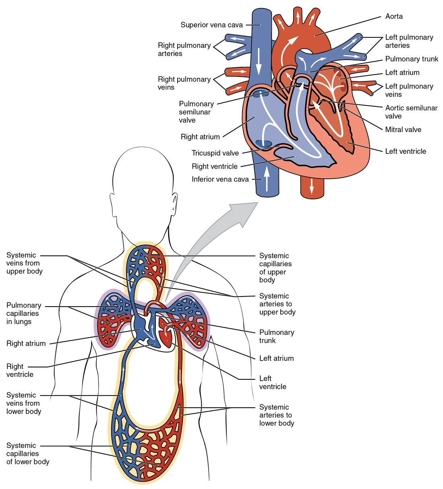
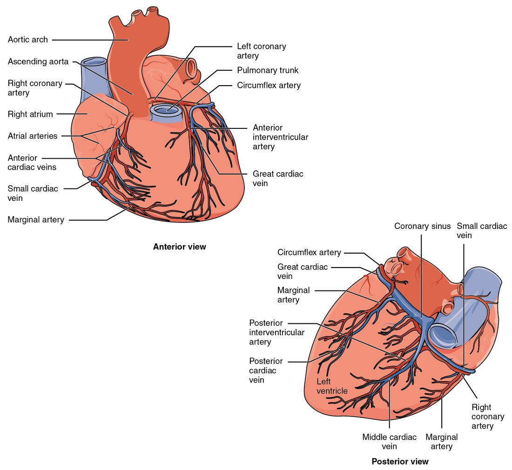

Blood flow through the heart, step by step, is one continuous loop with two halves. The right side of your heart pumps blood through your lungs; the left side pumps it through the rest of your body; and each half hands its blood to the other. This page traces that path, then looks at the heart's own blood supply and what happens when it is blocked.
Oxygenated and deoxygenated blood
Follow a single red blood cell. In your lungs its hemoglobin loads up with oxygen until almost every binding site is full. It travels to your thigh muscle, where some of that oxygen diffuses out into the working muscle fibers. When the cell heads back to your heart, it still carries oxygen, just less of it.
Those two states have names.
- Oxygenated blood (also called oxygen-rich blood) has just passed through the lungs. Its hemoglobin is about 97 to 98 percent loaded with oxygen. It is bright red.
- Deoxygenated blood (also called oxygen-poor blood; de- = removed) has just passed through the body's tissues and given up some oxygen. At rest its hemoglobin is still about 75 percent loaded. It is a darker red.
Two points follow. First, deoxygenated blood is not empty of oxygen. At rest your tissues take only about a quarter of what arrives, which leaves a reserve they can draw on during exercise. Second, no blood in your body is blue. Veins look blue through the skin because of how skin scatters and absorbs light, not because the blood inside is blue. Diagrams color deoxygenated blood blue only as a code. This course uses the same code in its own figures: one color for oxygenated blood, another for deoxygenated.
Two circuits, one loop
Your blood travels through two circuits connected end to end. The heart sits where they meet, with one pump for each circuit (Figure 1).
The pulmonary circuit
The pulmonary circuit (pulmon- = lung; also called the pulmonary circulation) carries blood from the right ventricle through the lungs and back to the left atrium.
- The right ventricle pumps deoxygenated blood into the pulmonary trunk, which splits into the right and left pulmonary arteries.
- The arteries branch until the blood reaches the pulmonary capillaries, a dense mesh of capillaries wrapped around the alveoli, the tiny air sacs of the lungs.
- Oxygen in the air of the alveoli is at a higher pressure than the oxygen dissolved in the arriving blood, so oxygen diffuses down this pressure gradient into the blood. Carbon dioxide is at a higher pressure in the blood than in the alveoli, so it diffuses out and is breathed away.
- The now oxygenated blood collects into the pulmonary veins and flows into the left atrium.
The systemic circuit
The systemic circuit (also called the systemic circulation) carries blood from the left ventricle to every other tissue and back to the right atrium.
- The left ventricle pumps oxygenated blood into the aorta.
- The aorta branches into arteries that reach every organ, and they branch down to the capillaries in the tissues.
- In those capillaries the gradients run the other way. Cells use oxygen for aerobic respiration, so oxygen is lower in the tissue than in the blood and diffuses out. Cells make carbon dioxide, so it is higher in the tissue and diffuses into the blood.
- The now deoxygenated blood collects into veins, which join into the superior and inferior venae cavae and empty into the right atrium.
Why "in series" matters
The two circuits are connected in series: the output of one is the input of the other. Every drop of blood that leaves the left ventricle must pass through the body, then the right heart, then the lungs, before it can reach the left ventricle again. Because of that, both ventricles must pump the same volume of blood per minute. If the right ventricle pumped even slightly more than the left each beat, blood would pile up in the lungs within minutes.
| Pulmonary circuit | Systemic circuit | |
|---|---|---|
| Pump | Right ventricle | Left ventricle |
| Starts in | Pulmonary trunk | Aorta |
| Ends in | Left atrium, through the pulmonary veins | Right atrium, through the venae cavae |
| Capillaries it supplies | Pulmonary capillaries around the alveoli | Capillaries in every other tissue |
| Blood in its arteries | Deoxygenated | Oxygenated |
| Blood in its veins | Oxygenated | Deoxygenated |
| What diffuses in the capillaries | Oxygen into the blood; carbon dioxide out | Oxygen out of the blood; carbon dioxide in |
| Resistance to flow | Low: short, wide, many vessels | High: includes narrow, muscular small arteries in every organ |
| Peak pressure the pump makes | About 25 mm Hg | About 120 mm Hg |
| Volume pumped per minute | The same as the systemic circuit | The same as the pulmonary circuit |
The path of blood through the heart
Now put the chambers, valves and vessels from the last topic in order. Start with blood returning from your body, and trace each step on Figure 2.

- Deoxygenated blood from the body enters the right atrium through the superior and inferior venae cavae. Blood from the heart's own wall enters too, through the coronary sinus (below).
- It passes through the tricuspid valve into the right ventricle.
- The right ventricle pumps it through the pulmonary valve into the pulmonary trunk.
- The pulmonary arteries carry it to the pulmonary capillaries in the lungs, where it becomes oxygenated.
- Oxygenated blood returns through the pulmonary veins into the left atrium.
- It passes through the mitral valve into the left ventricle.
- The left ventricle pumps it through the aortic valve into the aorta, and on to the systemic capillaries.
A memory aid: "try before you buy," tricuspid before bicuspid. Blood crosses the three-cusped tricuspid valve before it reaches the lungs, and the two-cusped mitral valve after.
Both sides of the heart work at the same time. The two atria fill together and contract together; then the two ventricles contract together. So at any instant the right heart is moving one batch of blood toward the lungs while the left heart moves another batch toward the body.
Systole and diastole
Put a finger on your wrist and count your pulse for 15 seconds. Each beat you feel is one squeeze of your ventricles, followed by a pause in which they relax and refill.
Systole (systol- = contraction) is the contraction phase of a heart chamber. Diastole (diastol- = expansion) is the relaxation phase, when the chamber refills. One complete heartbeat, from the start of one beat to the start of the next, is one cardiac cycle. In each cycle the atria contract first, then the ventricles. When textbooks say "systole" alone, they usually mean ventricular systole.
Worked example: how long does each phase last?
Your resting heart rate is 75 beats per minute. Ventricular systole lasts about 0.3 seconds. How long is ventricular diastole?
- Find the length of one cycle. A minute has 60 seconds: 60 s ÷ 75 beats = 0.8 s per beat.
- Subtract systole from the cycle: 0.8 s − 0.3 s = 0.5 s of diastole.
- Now your heart rate rises to 150 beats per minute. One cycle is 60 s ÷ 150 = 0.4 s.
- Systole shortens only a little, to about 0.25 s. Diastole is 0.4 s − 0.25 s = 0.15 s.
- Compare. Systole fell from 0.3 to 0.25 s, by about a sixth. Diastole fell from 0.5 to 0.15 s, by 70 percent.
Result: when heart rate rises, diastole takes most of the cut. That matters for the heart's own blood supply, as the next section shows.
The heart's own blood supply
The blood rushing through your heart's chambers does not feed its muscle. The myocardium is too thick for oxygen to diffuse in from the chambers, except for a thin inner layer next to the endocardium. Instead, the heart has its own set of vessels on its surface: the coronary circulation (coron- = crown, for the way the vessels circle the heart). Figure 3 shows them.

Coronary arteries
The two coronary arteries are the first branches of the aorta. They leave it just above the aortic valve.
- The left coronary artery is short. It splits almost at once into two branches.
- The anterior interventricular artery, usually called the left anterior descending (LAD) artery, runs down the anterior interventricular sulcus toward the apex. It feeds the front of the left ventricle, the front two thirds of the interventricular septum, and the apex.
- The circumflex artery (circum- = around, flex- = bend) curves around the left side in the coronary sulcus. It feeds the left atrium and the side and back of the left ventricle.
- The right coronary artery runs around the right side in the coronary sulcus. It feeds the right atrium and most of the right ventricle. Along the way it gives off marginal arteries that run down the right edge of the heart. In most people it then gives rise to the posterior interventricular artery, which runs down the posterior interventricular sulcus and feeds the back of both ventricles and the back third of the septum.
Which artery gives rise to the posterior interventricular artery varies. In most people it is the right coronary artery; in some it is the circumflex. That is why the same blocked artery can damage slightly different regions in different patients.
Cardiac veins
After passing through the capillaries of the myocardium, blood drains into the cardiac veins (also called coronary veins), which run beside the arteries.
- The great cardiac vein runs up beside the anterior interventricular artery, then around the left side in the coronary sulcus.
- The middle cardiac vein runs up beside the posterior interventricular artery.
- The small cardiac vein runs beside the right coronary artery and its marginal branch.
- The posterior cardiac vein drains the back of the left ventricle.
These veins all empty into the coronary sinus, a wide vein lying in the coronary sulcus on the back of the heart. The coronary sinus empties into the right atrium. A few small anterior cardiac veins on the front of the right ventricle skip the sinus and empty straight into the right atrium.
When the heart muscle gets its blood
Squeeze a garden hose and the water slows. The same thing happens inside your heart wall. The coronary arteries' smaller branches dive into the myocardium. When the ventricles contract in systole, the muscle squeezes those vessels, especially in the thick left ventricle wall. So most blood flow into the left ventricle's muscle happens during diastole, when the muscle relaxes.
Put that together with the worked example above. A fast heart rate shortens diastole the most, so it cuts the time available for coronary flow, at the same moment the faster-working muscle uses more oxygen. Heart muscle already removes about 70 to 75 percent of the oxygen from the blood that reaches it at rest, far more than most tissues. So it cannot get much more oxygen from the same blood. It can only get more oxygen by getting more blood flow.
When coronary flow fails: ischemia and infarction
Ischemia (isch- = hold back, -emia = blood condition) is blood flow too low to meet a tissue's demand for oxygen. In the heart it is called myocardial ischemia (my/o = muscle, cardi/o = heart). The usual cause is a fatty plaque that narrows a coronary artery from inside its wall.
What happens next depends on how severe the ischemia is and how long it lasts.
- Less blood reaches part of the myocardium, so less oxygen reaches its muscle fibers.
- Without enough oxygen, aerobic respiration slows, so the fibers make less ATP. They shift toward anaerobic metabolism and produce lactate.
- Lactate, other acids and chemicals from the starved muscle stimulate pain-sensing nerve endings. The person feels pressure or pain, often in the chest and sometimes in the arm, jaw or back.
- If blood flow returns within minutes, the fibers recover. If severe ischemia lasts more than about 20 to 30 minutes, the fibers begin to die.
Angina (angina pectoris; angina = strangling, pectoris = of the chest) is chest pain from ischemia that reverses. A typical example: a narrowed artery supplies enough blood at rest, but not during exercise, so pain comes on climbing stairs and fades within minutes of resting.
A myocardial infarction (MI), the common "heart attack," is death of heart muscle caused by prolonged ischemia (infarct = stuffed in). It usually starts when a fatty plaque cracks and a blood clot forms on it, suddenly blocking the artery. The dead muscle fibers cannot regenerate; they are replaced over weeks by scar tissue, which does not contract. Dying fibers release their contents, including the regulatory protein troponin, into the blood, and a rise in blood troponin is the main lab test for an MI. Because muscle dies steadily while the artery stays blocked, clinicians say "time is muscle": the sooner flow is restored, the more muscle survives.
| Angina | Myocardial infarction | |
|---|---|---|
| What happens to the muscle | Ischemia that reverses | Ischemia long enough to kill muscle |
| Typical trigger | Exertion or stress raising oxygen demand | Sudden clot blocking an artery |
| Pain | Minutes; eases with rest | Often longer; does not ease with rest |
| Troponin in blood | Normal | Rises |
| Lasting damage | None | Scar replaces dead muscle |
Anastomoses and collateral circulation
Two roads that join let traffic detour around a blocked stretch. Blood vessels can do the same. An anastomosis (plural anastomoses; ana- = again, stom- = mouth) is a connection between two blood vessels. Where branches of two arteries join, blood can reach tissue by more than one route. That alternate route is called collateral circulation.
The heart has some anastomoses between branches of the coronary arteries, but in most people they are small. A sudden block leaves them too narrow to carry enough blood, so the muscle downstream becomes ischemic. When an artery narrows slowly over years, though, pressure beyond the narrowing falls. More blood is pushed through the small connections from neighboring arteries, and the faster flow stimulates their walls to grow, so they widen over weeks to months. Collateral flow can then supply much of the region, so a later complete block may cause less damage. So the speed of the blockage matters, not just its size.
Summary
Oxygenated blood leaves the lungs about 97 to 98 percent loaded with oxygen; deoxygenated blood returns from the tissues still about 75 percent loaded, and no blood is blue. The right ventricle pumps deoxygenated blood through the low-pressure pulmonary circuit to the pulmonary capillaries; the left ventricle pumps oxygenated blood through the high-pressure systemic circuit. The circuits are in series, so both ventricles pump the same volume per minute. Blood's path: venae cavae, right atrium, tricuspid valve, right ventricle, pulmonary valve, pulmonary trunk and arteries, lungs, pulmonary veins, left atrium, mitral valve, left ventricle, aortic valve, aorta. Systole is contraction and diastole is relaxation; a fast heart rate shortens diastole most. The coronary arteries leave the aorta above the aortic valve; the cardiac veins drain into the coronary sinus and the right atrium. Left ventricle muscle gets most of its flow in diastole. Ischemia that reverses causes angina; ischemia long enough to kill muscle is a myocardial infarction. Anastomoses provide collateral circulation, which grows when narrowing is slow.